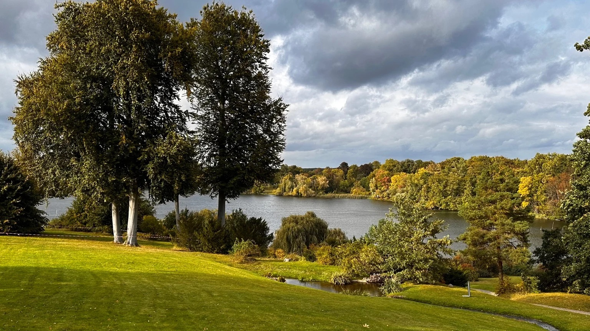

Auf einen Blick
Status 2025
Derzeit geschlossen wegen Innen-Sanierung
Nur bei Sonderveranstaltungen zugänglich
Sonderführungen 2025
"Zeit(ge)schichten" – September & Oktober
14,00 € (regulär) · 12,00 € (ermäßigt)
Park-Zugang
Ganzjährig 8:00 Uhr bis Einbruch der Dunkelheit
Außenansicht des Schlosses frei zugänglich
Erbaut
1833–1849 (mehrere Bauphasen)
Architekten: Schinkel, Persius, Strack
Stil
Englische Neugotik (Tudor-Stil)
99 Zimmer, Spitzbogenfenster, Türmchen
Adresse
Park Babelsberg 10, 14482 Potsdam
GPS: 52.409°N, 13.101°E
UNESCO-Welterbe
Seit 1990 Teil des Welterbes
"Schlösser und Parks von Potsdam und Berlin"
Wichtiger Hinweis:
Das Schlossinnere ist wegen umfassender Sanierungsarbeiten im Rahmen des Masterplans geschlossen.
Die restaurierten Fassaden und Terrassen sind jedoch frei zugänglich.
Sonderführungen finden im Herbst 2025 statt (siehe unten).
Geschichte: Vom Prinzensitz zum Kaiserschloss
1833: Beginn unter Karl Friedrich Schinkel
Der Bau von Schloss Babelsberg begann 1833 als Sommersitz für
Prinz Wilhelm von Preußen (1797–1888) und seine Gemahlin
Prinzessin Augusta von Sachsen-Weimar-Eisenach (1811–1890).
Der renommierte Architekt Karl Friedrich Schinkel entwarf das ursprüngliche Schloss
im neugotischen Stil mit Anlehnung an englische Tudor-Architektur. Der Ostflügel enthielt
die privaten Gemächer des Paares.
1844–1849: Erweiterung durch Persius und Strack
Unter der Leitung von Ludwig Persius (Schüler Schinkels) und
Johann Heinrich Strack erfuhr das Schloss eine umfangreiche Erweiterung:
- Bau des Westflügels und des Verbindungstrakts
- Errichtung der prächtigen Türme und Erker
- Ausbau auf insgesamt 99 Zimmer
- Anlage der Terrassen (Porzellanterrasse, Goldene Terrasse)
1861–1888: Residenz des Königs und Kaisers
Als Wilhelm 1861 König von Preußen und 1871 Deutscher Kaiser wurde,
blieb Schloss Babelsberg seine bevorzugte Sommerresidenz. Das kaiserliche Paar verbrachte hier
mehr als 50 Jahre ihre Sommer.
Wusstest du?
Wilhelm und Augusta gestalteten ihr Schloss aktiv mit. Sie wählten Möbel, Tapeten
und Kunstwerke persönlich aus. Viele Original-Dekorationen sind bis heute erhalten.
Park Babelsberg: Englische Landschaftskunst
Der umgebende Park Babelsberg wurde von den Landschaftsarchitekten
Peter Joseph Lenné und Fürst Hermann von Pückler-Muskau
nach dem Vorbild englischer Landschaftsgärten gestaltet. Das Ergebnis ist ein weitläufiger Park
mit Sichtachsen auf die Havel, Glienicker Brücke und benachbarte Schlösser.
20. Jahrhundert: Wechselvolle Nutzungen
Nach dem Tod Augustas 1890 diente das Schloss verschiedenen Zwecken:
- 1918–1945: Museal genutzt, teilweise bewohnt
- 1945: Kriegsschäden durch Bombardierung
- DDR-Zeit: Filmhochschule und Archive der DDR-Filmgesellschaft DEFA
- Nach 1990: Rückgabe an die SPSG, schrittweise Restaurierung
1990: UNESCO-Welterbe
Seit 1990 ist Schloss Babelsberg Teil des UNESCO-Welterbes "Schlösser und Parks von Potsdam und Berlin".
Die Außenfassaden wurden bis 2016 aufwendig restauriert.
Heute: Sanierung und Sonderöffnungen
Das Schlossinnere ist derzeit wegen umfassender Sanierungsarbeiten geschlossen.
Die SPSG plant eine vollständige Restaurierung der Innenräume. Bis dahin sind nur Sonderführungen
bei Veranstaltungen möglich.
Masterplan Sanierung:
Die Sanierung der Innenräume ist Teil des langfristigen Masterplans der SPSG.
Ein konkreter Abschluss-Termin steht noch nicht fest (Stand: Oktober 2025).
Architektur: Englische Neugotik in Preußen
Stilmerkmale der Neugotik
Schloss Babelsberg ist ein herausragendes Beispiel für englische Neugotik in Deutschland:
- Spitzbogenfenster – Charakteristisch für gotische Baukunst
- Polygonale Türmchen – Verleihen dem Schloss eine märchenhafte Silhouette
- Erker und Balkone – Bieten Ausblicke auf Park und Havel
- Zinnen und Maßwerk – Dekorative Elemente im Tudor-Stil
- Asymmetrische Anlage – Typisch für romantische Architektur
Die drei Baumeister
Karl Friedrich Schinkel (1781–1841)
Preußens berühmtester Architekt entwarf den ursprünglichen Bau (1833–1835).
Schinkel prägte die Neugotik in Preußen und schuf zahlreiche Berliner Wahrzeichen.
Ludwig Persius (1803–1845)
Schinkels Schüler leitete die erste Erweiterungsphase (1844–1845). Persius war
Hofarchitekt Friedrich Wilhelms IV. und baute u.a. die Friedenskirche in Potsdam.
Johann Heinrich Strack (1805–1880)
Strack vollendete das Schloss nach Persius' Tod (1845–1849). Er entwarf auch
den Flatowturm im Park und die Nationalgalerie in Berlin.
Innenräume: 99 Zimmer im Schloss
Das fertiggestellte Schloss umfasst 99 Zimmer auf mehreren Etagen:
- Tanzsaal – Prunkvoller Festsaal für Empfänge
- Oktogon – Achteckiger Raum mit Aussicht auf die Havel
- Bibliothek – Große Büchersammlung des Kaiserpaars
- Privatgemächer – Wohn- und Schlafräume von Wilhelm und Augusta
- Gästezimmer – Für hochrangige Besucher des Hofes
Die Innenausstattung ist weitgehend im neugotischen Stil gehalten, mit dunklen Holzvertäfelungen,
Wandmalereien und mittelalterlich inspirierten Möbeln.
Terrassen mit Panoramablick
Die Porzellanterrasse und die Goldene Terrasse bieten
spektakuläre Ausblicke auf:
- Die Havel mit ihren Seitenarmen
- Glienicker Brücke ("Agentenbrücke")
- Schloss Glienicke und Jagdschloss Glienicke
- Park Babelsberg mit Flatowturm
Foto-Tipp:
Die besten Fotos des Schlosses machst du vom Uferweg Nord (10 Min Fußweg).
Von dort hast du die klassische Ansicht mit Havel im Vordergrund.
Was gibt es zu sehen? (Von außen)
Da das Schlossinnere derzeit geschlossen ist, konzentriert sich der Besuch auf die Außenanlagen:
1. Schloss-Fassaden (frei zugänglich)
Die vollständig restaurierten Außenfassaden zeigen die neugotische Pracht in voller Schönheit:
- Detailreiche Steinmetzarbeiten an Fenstern und Portalen
- Türme und Erker aus verschiedenen Perspektiven
- Ornamente und Wappen der preußischen Königsfamilie
2. Terrassen (teilweise zugänglich)
Die Terrassen bieten Panoramablicke über den Park und die Havel.
Zugang je nach Veranstaltung und Führung.
3. Park Babelsberg (ganzjährig geöffnet)
Der weitläufige Landschaftspark ist frei begehbar:
- Flatowturm (46m Aussichtsturm, Mai–Okt geöffnet)
- Matrosenhaus (historisches Bootshaus am Ufer)
- Uferweg Nord (malerischer Spazierweg mit Schlossblick)
- Gerichtslaube (mittelalterlicher Bau aus Berlin)
- Dampfmaschinenhaus (Maschinenhaus im maurischen Stil)
4. Sonderführungen 2025: "Zeit(ge)schichten"
Im September und Oktober 2025 bietet die SPSG exklusive Führungen an,
die Einblicke in ausgewählte Räume gewähren:
Themen der Führung
Spuren aus der Ferne: Kolonialhandel im Sulu-Meer (1870er)
Spuren des Kunstschutzes: Schloss als WWII-Depot
Spuren nach 1945: DDR-Nutzung durch DEFA
Termine
September: 5., 13., 19., 27.
Oktober: 2., 17., 24., 26.
Jeweils 14:00 Uhr
Tickets
14,00 € (regulär)
12,00 € (ermäßigt)
Buchung: SPSG-Website
Wichtig: Einige Termine sind bereits ausverkauft!
Prüfe die Verfügbarkeit auf der SPSG-Website:
Zur Buchung
Anreise & Fußwege zu Schloss Babelsberg
Mit ÖPNV (empfohlen)
Haltestelle "Schloss Babelsberg"
Bus 694 (Potsdam Hauptbahnhof ↔ Schloss Babelsberg)
Tram 93 (nur zeitweise, prüfe VBB-Fahrplan)
GPS: 52.406°N, 13.101°E
Fußweg zum Schloss: 5–8 Min (400m)
Weg: Gut ausgeschildert, asphaltiert
Haltestelle "Alt Nowawes"
Tram 96, 99
GPS: 52.404°N, 13.088°E
Fußweg zum Schloss: 15–20 Min (1,3 km)
Weg: Durch den Park, leichte Steigung
Live-Fahrplan nutzen:
Nutze unseren ÖPNV-Finder mit Live-Abfahrten
für aktuelle Verbindungen.
Mit dem Auto
Wichtig: Parken direkt am Schloss ist NICHT möglich!
Nutze die öffentlichen Parkplätze am Parkrand.
Nächste Parkplätze:
-
Parkplatz Schloss Babelsberg (ca. 50 Plätze, oft voll!)
Rudolf-Breitscheid-Straße
5–8 Min Fußweg zum Schloss
Gebührenpflichtig (2-3€/Std)
-
Parkplatz Alt Nowawes (Alternative)
Weberplatz
15–20 Min Fußweg zum Schloss
Teilweise kostenlos
Zur interaktiven Parkplatz-Karte
mit 1254 Parkplätzen in Potsdam
Mit dem Fahrrad
Radfahren im Park ist eingeschränkt erlaubt!
Nur auf markierten Wegen. Räder müssen am Parkeingang abgestellt werden.
- Fahrradparkplätze: Am Haupteingang Park Babelsberg (ungesichert)
- Fußweg vom Rad-Parkplatz: 8–10 Min
Zu Fuß durch den Park
Vom Flatowturm
10–12 Min (800m) · Asphaltiert, flach
Von Glienicker Brücke
25–30 Min (2,2 km) · Schöner Uferweg
Vom Neuen Garten
30–35 Min (2,5 km) · Durch Waldwege
Praktische Tipps für deinen Besuch
Beste Besuchszeit
- Jahreszeit: Mai–Oktober (bestes Wetter)
- Sonderführungen: September & Oktober 2025
- Fotografie: Nachmittags (Licht von Westen)
- Park-Besuch: Ganzjährig möglich
Was mitnehmen?
- Kamera für Außenfotos
- Bequeme Schuhe (Parkwege)
- Wasser & Snacks (keine Gastronomie im Park)
- Wetterfeste Kleidung (Wind am Ufer!)
Zeitplanung
- Außenansicht: 20–30 Min
- Sonderführung: 90 Min
- Park-Spaziergang: 60–90 Min
- Gesamt mit Park: 2–3 Stunden
WC & Gastronomie
- WC: Keine am Schloss, nächstes 400m entfernt
- Café: Keine im Park
- Nächstes: Babelsberg-Stadt (1,5 km)
- Tipp: WC-Finder nutzen
Mit Kindern
- Außenbesichtigung für alle Alter geeignet
- Park mit viel Platz zum Toben
- Spielplatz im Park vorhanden
- Tipp: Kombiniere mit Flatowturm-Besuch
Barrierefreiheit
- Park: Weitgehend rollstuhlgeeignet (Hauptwege)
- Schloss außen: Teilweise Stufen
- Terrassen: Nicht barrierefrei
- ÖPNV: Bus 694 mit Niederflur
Beste Fotospots rund um das Schloss
Das Schloss Babelsberg ist ein beliebtes Fotomotiv. Diese Spots bieten die besten Perspektiven:
Westliche Seeseite (GPS: 52.407669, 13.101294)
Beste Zeit: Nachmittags 15:00–18:00 Uhr
Perspektive: Frontalansicht des Schlosses vom Tiefen See aus
Besonderheit: Spiegelung im Wasser bei ruhigem Wetter
Vom Uferweg am Tiefen See hast du den klassischen Postkartenblick auf das Schloss.
Bei Windstille spiegelt sich die neugotische Fassade malerisch im Wasser.
Südlicher Parkweg (GPS: 52.407364, 13.093581)
Beste Zeit: Vormittags 9:00–11:00 Uhr
Perspektive: Seitliche Ansicht mit Turm im Fokus
Besonderheit: Rahmen durch alte Bäume
Von hier siehst du das Schloss durch eine natürliche Baumallee.
Perfekt für stimmungsvolle Landschaftsfotos mit historischem Charme.
Östliche Anhöhe (GPS: 52.408650, 13.095667)
Beste Zeit: Sonnenuntergang 18:00–20:00 Uhr (Sommer)
Perspektive: Erhöhte Position mit Weitblick
Besonderheit: Goldenes Abendlicht auf der Fassade
Von der leichten Anhöhe östlich des Schlosses fotografierst du mit Weitwinkel
sowohl das Gebäude als auch die umgebende Parklandschaft.
Nördlicher Zugang (GPS: 52.408558, 13.096717)
Beste Zeit: Morgens 8:00–10:00 Uhr
Perspektive: Seitliche Ansicht mit Parkeingang
Besonderheit: Ruhige Atmosphäre, kaum Besucher
Früh morgens hast du diesen Spot oft für dich allein.
Das weiche Morgenlicht verleiht dem roten Backstein eine warme Tönung.
Fotografie-Hinweise
📸
Ausrüstung
Weitwinkel (24mm) für Gesamtansicht, Tele (70-200mm) für Architektur-Details
☀️
Licht
Vermeide Mittags-Sonne (zu hart). Golden Hour (1h vor Sonnenuntergang) ideal
🌦️
Wetter
Leicht bewölkt sorgt für weicheres Licht. Nach Regen: dramatische Wolken
🚁
Drohnen
Verboten ohne SPSG-Genehmigung (meist nicht erteilt)
📅
Jahreszeit
Herbst: Buntes Laub. Frühling: Blüten. Winter: Schnee auf Türmen (selten)
Kombiniere deinen Besuch
Schloss Babelsberg ist Ausgangspunkt für verschiedene Touren durch Park und Umgebung:
Route 1: Schlösser-Dreieck (4–5 Stunden)
- Schloss Babelsberg (Außenansicht, Terrassen) – 45 Min
- 10 Min Fußweg
- Flatowturm (Aufstieg, Aussicht) – 60 Min
- 25 Min zum Neuen Garten
- Marmorpalais (Museum) – 60 Min
- Schloss Cecilienhof (Potsdamer Konferenz) – 60 Min
Route 2: Park-Rundgang (2–3 Stunden)
- Start: ÖPNV-Haltestelle "Schloss Babelsberg"
- Schloss Babelsberg (Außenbesichtigung) – 30 Min
- Flatowturm – 60 Min
- Uferweg Nord (Havelblick) – 30 Min
- Matrosenhaus – 15 Min
Route 3: Historische Grenze (3 Stunden)
- Schloss Babelsberg – 30 Min
- 20 Min Uferweg
- Glienicker Brücke (Agentenbrücke, DDR-Geschichte) – 30 Min
- Schloss Glienicke (West-Berlin) – 45 Min
- Jagdschloss Glienicke – 30 Min
Zur interaktiven Karte
mit allen Sehenswürdigkeiten, WCs, Cafés und ÖPNV-Haltestellen
Häufig gestellte Fragen (FAQ)
Wann kann ich das Schlossinnere besichtigen?
Das Schlossinnere ist derzeit wegen Sanierung geschlossen. Nur bei Sonderveranstaltungen
(z.B. "Zeit(ge)schichten" im Herbst 2025) ist ein begrenzter Zugang möglich.
Prüfe die SPSG-Website
für aktuelle Termine.
Kann ich die Außenanlagen kostenlos besuchen?
Ja! Der Park Babelsberg und die Außenansicht des Schlosses sind frei zugänglich.
Nur für Sonderführungen ins Schlossinnere wird Eintritt verlangt (14€ / 12€ ermäßigt).
Wie lange dauert die Sanierung noch?
Ein konkreter Abschluss-Termin steht noch nicht fest (Stand: Oktober 2025).
Die Sanierung ist Teil des langfristigen Masterplans der SPSG und wird
voraussichtlich noch mehrere Jahre dauern.
Gibt es Führungen auf Englisch?
Die Sonderführungen werden überwiegend auf Deutsch angeboten. Für englischsprachige
Führungen kontaktiere den SPSG Besucherservice im Voraus:
+49 (0)331 96 94-200
Ist der Park für Hunde erlaubt?
Ja, Hunde sind im Park Babelsberg erlaubt, müssen aber an der kurzen Leine geführt werden.
Hundekot muss umgehend entfernt werden. Im Schlossinneren sind keine Hunde erlaubt (außer Assistenzhunde).
Kann ich im Park picknicken?
Ja, aber nur auf markierten Erholungsflächen. Grillen und offenes Feuer sind
im gesamten Park verboten. Siehe Parkordnung.
Gibt es ein Café im Park?
Nein, im Park Babelsberg gibt es keine Gastronomie. Das nächste Café ist in Babelsberg-Stadt
(ca. 1,5 km entfernt). Nutze unseren Café-Finder
mit 34 Restaurants und Cafés in der Umgebung.
Weitere Attraktionen im Park Babelsberg

Flatowturm
46m hoher Aussichtsturm mit 360°-Panorama. Erbaut 1853-1856. Geöffnet Mai–Okt, Sa/So.
Mehr erfahren

Matrosenhaus
Historisches Bootshaus am Havelufer. Heute Event-Location mit Blick auf Glienicker Brücke.
Zur Übersicht

Uferweg Nord
Malerischer Spazierweg entlang der Havel. Perfekt für Fotos mit Schlossblick.
Zur Übersicht
Kontakt & Offizielle Links